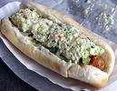

{kind=link}
Fire Temperature
*!@#$% HOT!
Pallet Burn Record
328.25 Pallets
Weather Moments
Clear (warm during day and near freezing at night)
Total Consumption
A vast quantity using the following equations:

Longest Travel Time
Jonny Mon (5 hours)
|
Laughable Moments |
|
Burrell trying to
walk the log Saturday night and falling in creek up to his neck. |
|
Most Used Phrase |
|
F*** that liberal SOB! |
Other Phrases Overheard
"Go down to Dairy Queen and get me a slaw
dog." 
"Fire Hot! River Cold! Beer Good!"
|
Most Improved Camper |
|
No one deserving enough to take this honor. |
AWOL or DNF
No guilty campers this year.
No Shows
No guilty campers this year.
Campers on Probation
John L. (double secret probation has been
decreased to single public probation)
Number of Guests
3
Officer of the Law Sightings
0
Latest non-human freak of nature sighting
No new sightings.
However the black cat was discussed briefly.
Fire Temperature
*!@#$% HOT!
Pallet Burn Record
328.25 Pallets
Weather Moments
Clear (warm during day and near freezing at night)
Total Consumption
A vast quantity using the following equations:

Longest Travel Time
Jonny Mon (5 hours)
|
Special Thanks |
|
To all those who prepared the
campsite (wood delivery, pit digging, tarp erecting, etc.)
|
Addition to the Annual Clemson vs. USC Wager
An agreement was reached between BA and Devo.
The loser of the annual agreed upon wager must display the winning team's logo
magnet on his vehicle from noon Friday until noon Sunday.
The logo must be visible from the center of the camp and the owner of the
vehicle must pose beside the logo for 30 seconds to allow for any pictures.


Future Expectations Now Implemented As A
Rule
Sunday prior to Camping Trip is now designated
as wood/pallet pickup and delivery day. This is the most important preparation
of the trip.
Attendance is mandatory and absence requires a written doctor's statement or
proof of out-of-town travel signed by a CEO.
Death is no excuse. Have a family member drop off your body and we will
add you to the fire. Free cremation.
We will even scoop some ashes into a cup for your loved ones. Oh, there
may be a few pallet nails mixed in though.
Summary
Fire was stoked, cards were played, hops was
consumed. A quorum was present for the annual meeting of the Board of
Directors.
A reminder was presented about the 30th trip in Vegas.
Everyone agreed to donate a maximum of two dollars to the website fund and Devo
will cover the remainder.
A reminder was provided about keeping this trip to a limited group of campers.
Jonny Mon was awarded the chair for midnight
sacrifice. A good time was had by all.
The End.